Describes the concrete day-zero-to-week-two inference workstream (KV cache, attention kernels, quantization, sparse-attention kernel writing) a serving provider runs through after a new open-weight model launches, and how agentic coding ...
Together's pipeline treats a new open-weight model's launch as the start of a multi-week optimization sprint, and Fu frames the payoff as open models narrowing the gap with frontier labs (ours).
“community as a whole is very strong and powerful. While we open source the model, everyone can use it.”
said at 01:31“there are things like the minimax sparse attention and and some of those choices that were a little bit different from any model that's out there”
said at 07:40“we have to do this with the KV cache, we have to do this with the attention kernels”
said at 08:43“it not only understands text and it not only writes code, it also understands videos and images”
said at 04:06“it was trained multimodal from scratch. So, from step zero, we trained not only text data, we also trained image data”
said at 10:47“you'll upload your whole code base to the model, and that's a very different optimization and routing and kernel challenge than than just the the chat base workload”
said at 09:45“there's no stone that you leave unturned and you just uh keep keep going at it”
said at 11:48“some things that I hope for, so I think we underutilize our GPUs a lot right now”
said at 17:32“the open-source frontier really can catch up. Um and and it's it's not even that far behind”
said at 18:34(ours) The specific day-zero list (KV cache, attention kernels, quantization) is a more checkable claim than the general "we optimize continuously" framing common to serving-provider talks; it gives a concrete list to ask a vendor about when evaluating serving partners for a new open-weight model.
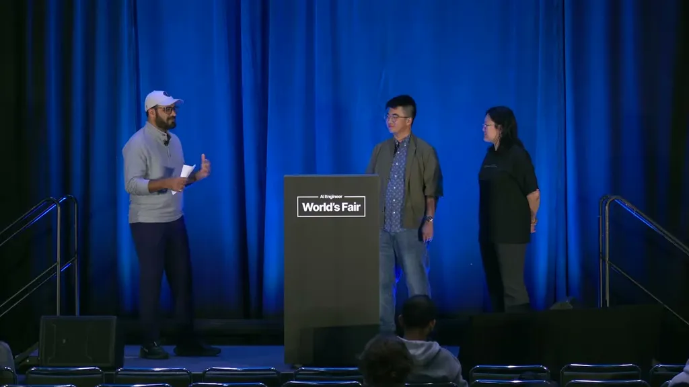
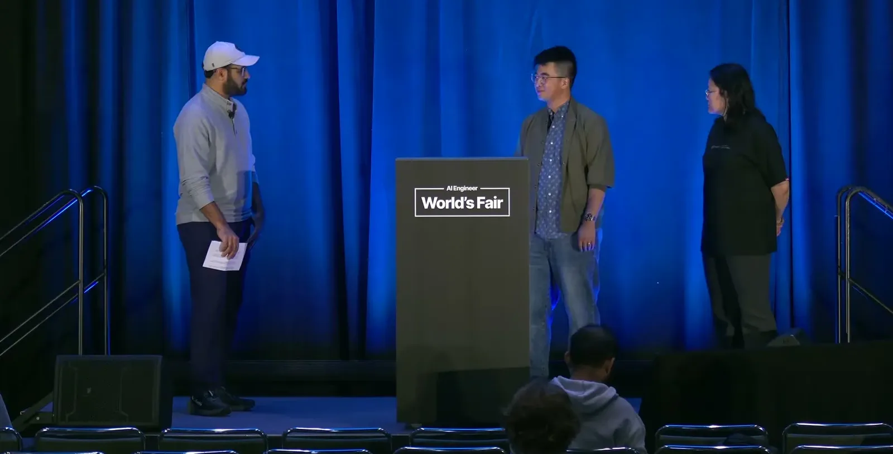
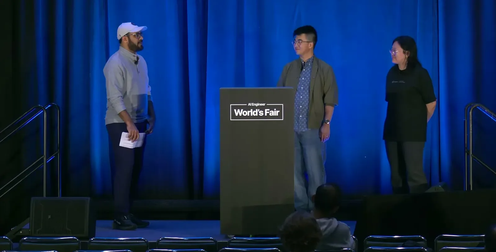
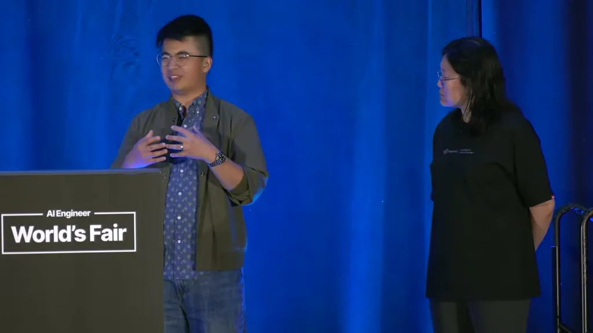
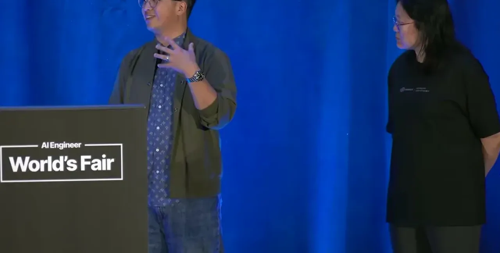
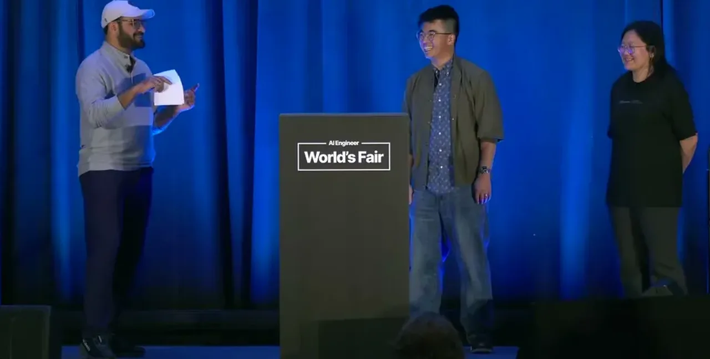
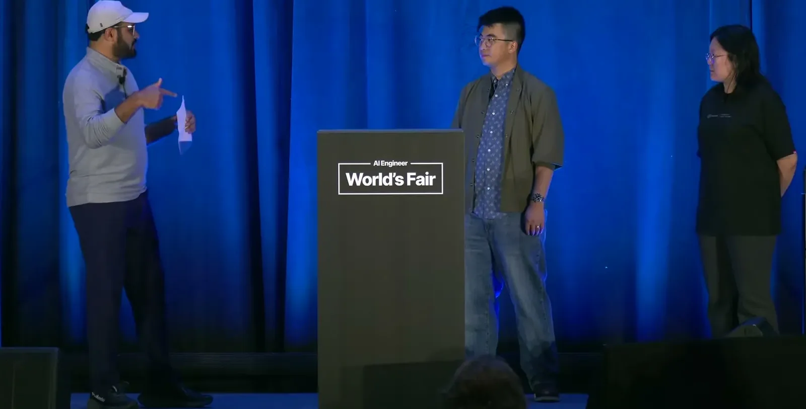
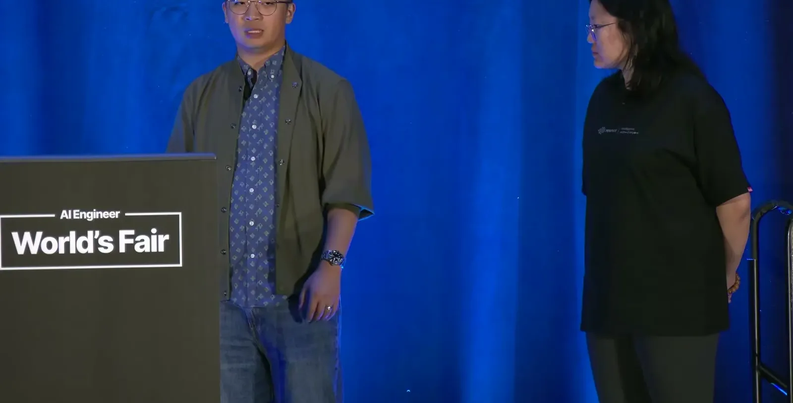
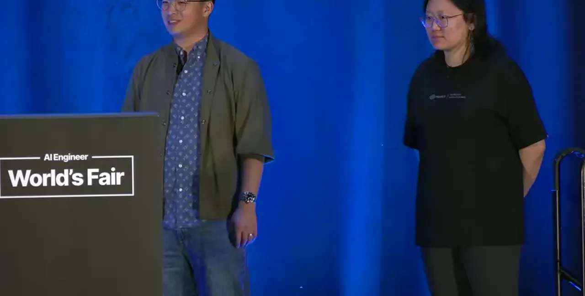
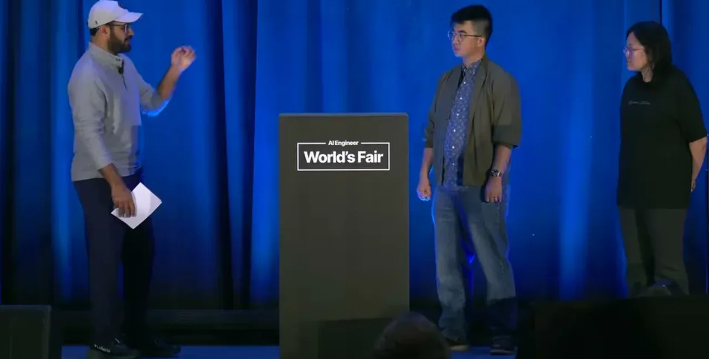
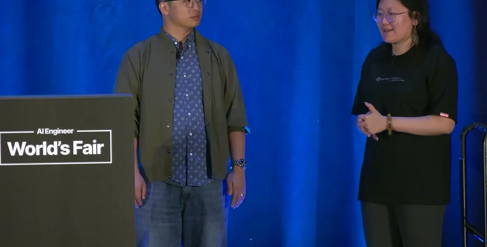
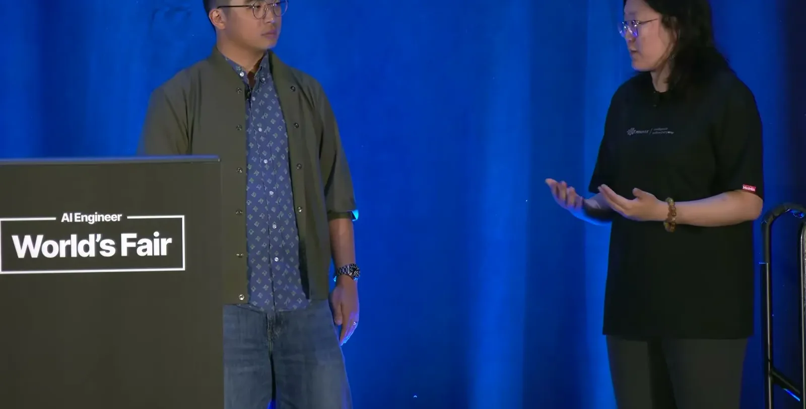
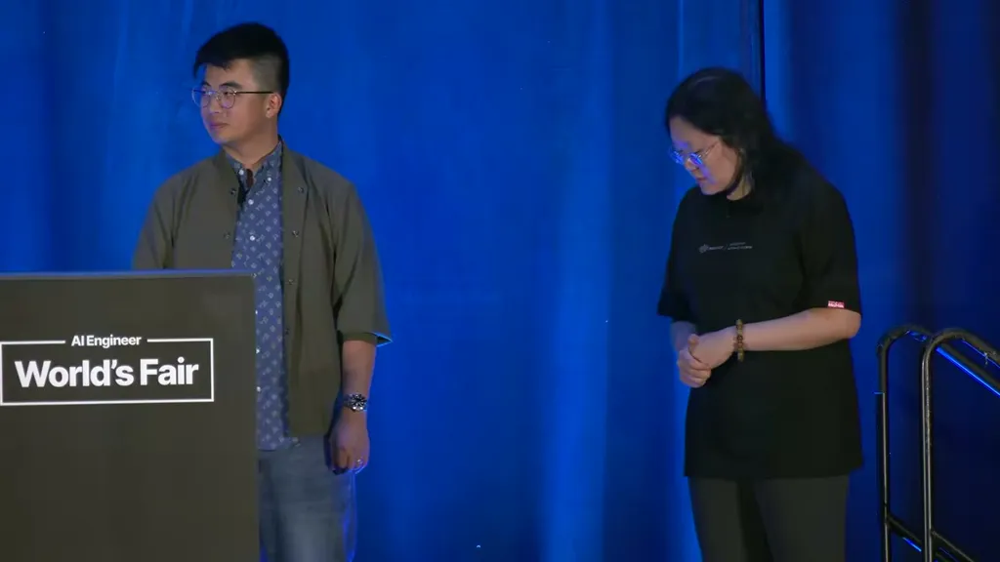
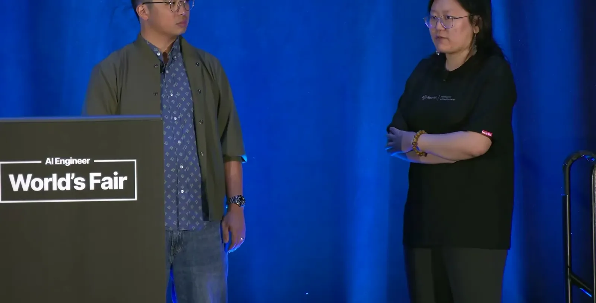
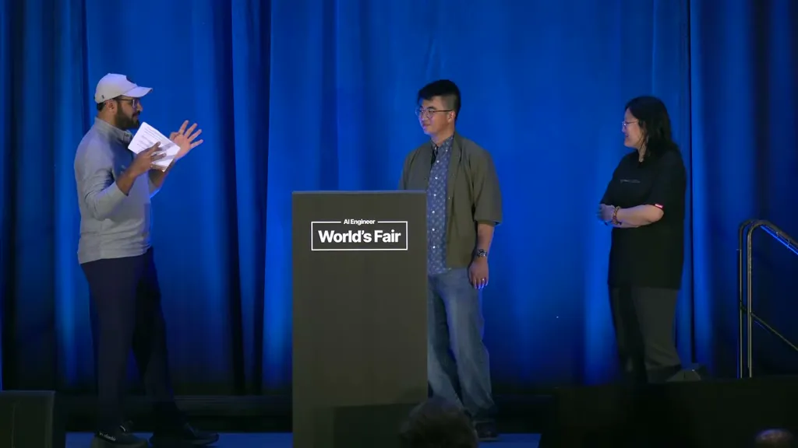
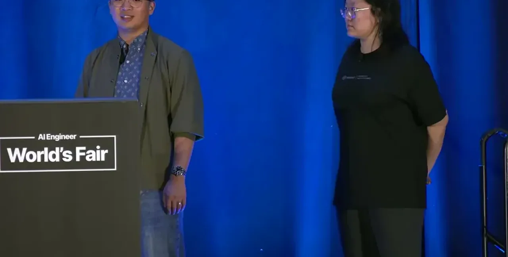
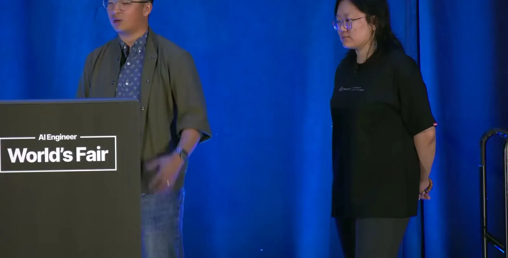
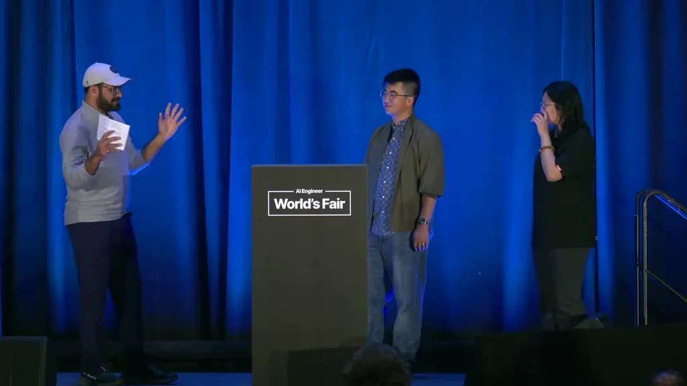
| Stance | Claim | t |
|---|---|---|
| asserts | MiniMax frames open-sourcing M3 as aligned with a mission to spread intelligence and let outside developers contribute improvements. | 01:31 |
| asserts | M3 differs from the M2 series in that it understands video and images in addition to text and code. | 04:06 |
| asserts | M3 introduced MiniMax's own sparse-attention design, which differs from other open models' attention choices. | 07:40 |
| asserts | On launch day, Together tracks a known list of follow-up optimization work, including KV cache handling and attention kernels. | 08:43 |
| asserts | Agentic coding workloads, which upload an entire codebase to the model, require different optimization, routing, and kernel choices than chat-turn workloads. | 09:45 |
| asserts | M3 was trained multimodal from the very first training step rather than having a modality added later. | 10:47 |
| asserts | Together's approach to inference optimization is to pursue every available edge without stopping at a fixed list of items. | 11:48 |
| warns | GPU utilization remains low across the industry, comparable to figures reported for SpaceX. | 17:32 |
| predicts | Open-source models are catching up to closed frontier labs and are not far behind. | 18:34 |
Machine-readable copy embedded in this page (script#ontology) and in the corpus ontology.